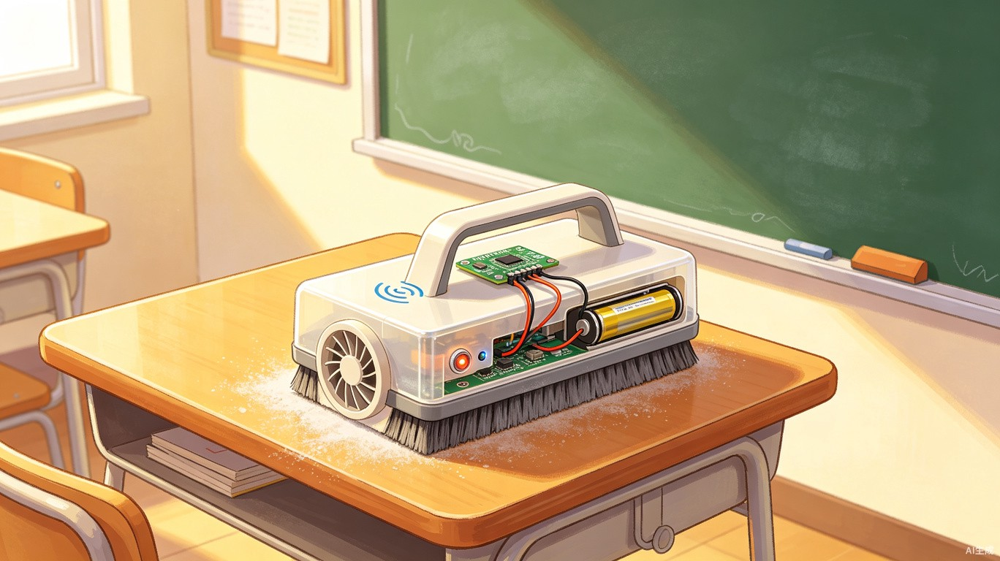
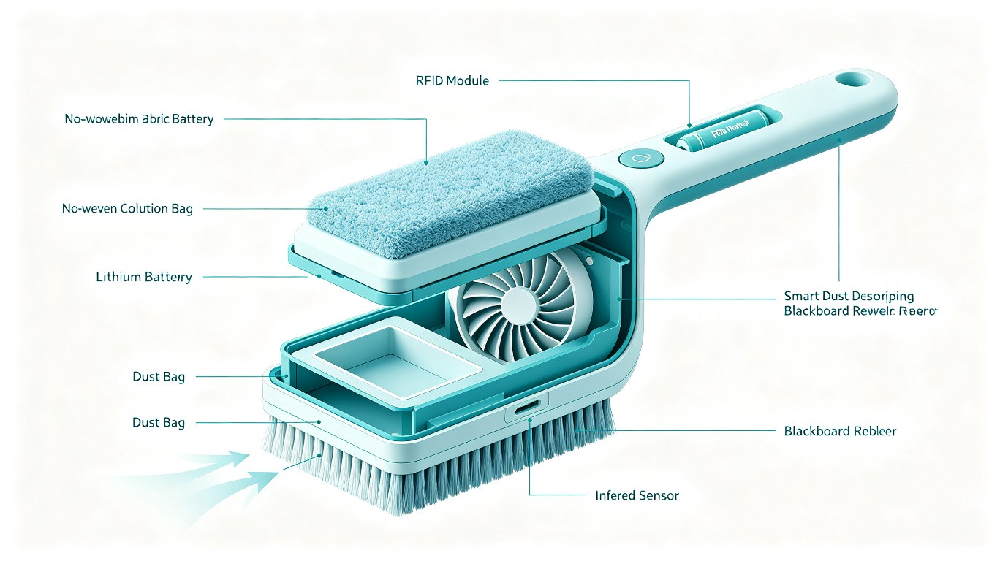
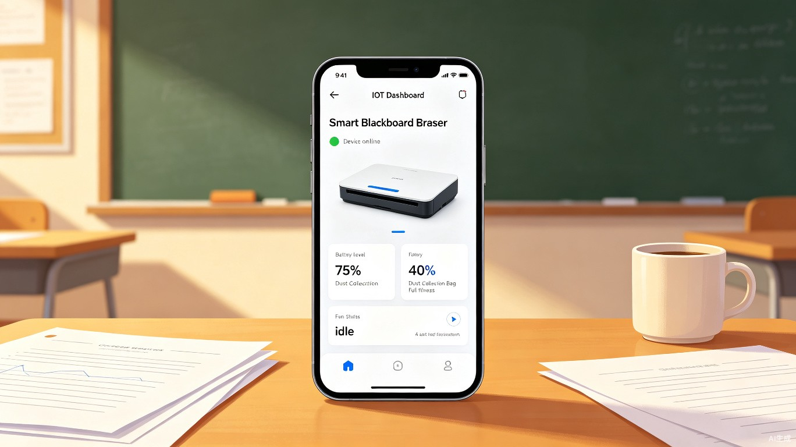

智联慧吸尘便携黑板擦
一款集红外感应自动启停、物联网远程监控、RFID权限管控于一体的智能吸尘黑板擦，从源头消除粉笔灰对师生健康的危害。

一、研究背景及目标
每天在教室里上课，老师写完黑板后拿起黑板擦用力擦，白色的粉笔灰就像小雪花一样飘起来。擦完后老师手指上、袖口上全是灰，还会忍不住咳嗽。轮到同学们值日擦黑板时，粉笔灰钻进鼻子里、嘴巴里，特别不舒服，擦完后连鼻子里都是白的。
后来在科学课上学了一点自动化知识，便萌生了设计想法——要是能有一个能把粉笔灰吸走的黑板擦就好了，这样老师和同学们就不用再受粉笔灰的苦了。于是决定自己设计一款"智能吸尘黑板擦"，让擦黑板再也没有粉尘烦恼。
二、项目研究及方案
目标一：源头吸尘
做一个能自动吸附粉笔灰的黑板擦，擦黑板时粉笔灰不会飘出来，从源头保护大家的健康。
目标二：智能感应
让黑板擦能自己"判断"啥时候该工作，不用手动开开关，提升使用的便捷性。
目标三：物联网联动
加上物联网功能，老师用手机就能实时查看黑板擦还有没有电、粉笔灰满没满。
目标四：轻便易用
让黑板擦兼顾功能性与轻便性，小学生也能轻松拿起来用。
三、项目构思 — 核心零件

| 零件名称 | 功能说明 |
|---|---|
| 轴流风扇 | 产生吸力，高效吸入粉笔灰 |
| 红外传感器 | 精准检测黑板擦是否接触到黑板表面 |
| 锂电池 | 持续给风扇和各模块供电 |
| 刷毛 | 擦除黑板上的粉笔字迹 |
| 集尘袋 | 收集吸入的粉笔灰，便于清理更换 |
| 物联网模块 | 连接老师的手机，实时传输设备状态 |
| RFID模块 | 权限管控，只有老师的RFID卡才能启动设备 |
| 掌控板 | 核心控制单元，运行程序逻辑与传感器数据处理 |
四、研究过程 — 装一装
整个组装过程分为五个关键步骤，从外壳制作到最终集尘袋安装，层层推进。
把旧塑料盒的底部挖了一个长方形的洞，把刷毛用胶水粘在洞的周围。这样擦黑板时，刷毛能把字擦掉，灰能顺利从洞里进去。
在塑料盒侧面挖了一个小圆洞，把小风扇塞进去，风扇朝里吹（这样能把灰吸进盒子里），再用胶带把风扇牢固固定好。
在手柄里挖了一个小槽，把锂电池放进去，用电线把电池和风扇、传感器连起来。爸爸帮我仔细检查了电线，防止接错电。
把红外传感器粘在刷毛旁边，反复调整角度，让它刚好能对着黑板。一碰到黑板，传感器就会"指挥"风扇转起来。
在盒子里面放了一个无纺布小袋子，风扇吸进来的灰会掉进袋子里，满了就能轻松拿出来倒掉。
五、研究过程 — 测一测
组装完成后，进行了三轮测试，每次都发现了不同的问题并逐一解决。
问题：把黑板擦碰到黑板，风扇没有反应，传感器好像没"看到"黑板。
问题：风扇转了，但粉笔灰只进了一部分，很少落到集尘袋里，吸尘效果不佳。
问题：想让老师用手机随时查看黑板擦的实时状态，但设备一直连不上服务器，物联网功能无法实现。
六、研究过程 — 二代更新
在解决初代问题后，进一步对产品进行了两方面的升级改进。
加RFID卡片 — 权限管控
在黑板擦上装了一个RFID模块，只有用老师的RFID卡接触，黑板擦才能用。实现使用权限管控，这样就不会有同学随便玩了。
增加水平仪 — 智能启停
在程序中利用掌控板自带的水平仪进行垂直检测，实现设备智能启停。避免在拿起来的过程中浪费资源。
七、程序设计
整个软件系统分为四个核心模块，形成从硬件初始化到数据联网的完整闭环。
初始化
完成物联网模块、红外探测模块、继电器模块的初始激活
数据获取
读取设备电量、传感器感应数据，对数据进行预处理
控制执行
分析数据、自动判断工作状态，实现智慧吸尘核心功能
物联网闭环
数据联网、稳定传输，实现数据可视化与系统实时反馈

八、项目的意义
源头减少粉尘飞扬
手机一键查看状态
感应+权限双管控
减少资源浪费
九、项目应用
校园无尘学习环境升级
适用于教室、实验室、多媒体教室等教学场所，从源头减少粉笔灰飞扬，保护老师与学生的呼吸道健康，营造干净、舒适、文明的课堂环境，有效提升整体教学体验。
办公及培训场所洁净应用
可用于培训机构、会议室、办公室、画室等场所，保持墙面与空气洁净，避免粉尘污染环境与设备，让书写、演示、讲解过程更卫生、更专业，全面提升公共空间使用品质。
十、未来展望
⚡ 优化吸尘与续航
进一步提升吸尘与过滤效果，增强粉尘吸附率；升级电池容量，实现更长时间的连续使用。
🔬 智能感应自动调节
加入粉尘浓度感应模块，根据粉尘量自动调节吸力；实现节能与高效除尘的智能平衡。
📷 轻量化与便携化
优化整体结构与材质，更轻便、更舒适；进一步缩小体积，提升携带与收纳的便利。
♻ 多功能与环保设计
增加可拆卸清洗滤网、快充接口等功能；使用环保材料、可循环升级，延长设备整体使用寿命。
十一、研究感悟
附录：传统黑板擦 vs 智联慧吸尘便携黑板擦
传统黑板擦
- 擦除时粉笔灰大量飞扬
- 需手动操作，无智能控制
- 粉笔灰沾满手和衣物
- 无法获知设备状态
- 任何人都可随意使用
- 长期吸入粉尘损害健康
智联慧吸尘便携黑板擦
- 擦除时同步吸尘，粉尘不外泄
- 红外感应+水平仪自动启停
- 集尘袋统一收集，手部保持清洁
- 手机实时监控电量与集尘状态
- RFID权限管控，仅限授权使用
- 从源头保护师生呼吸道健康